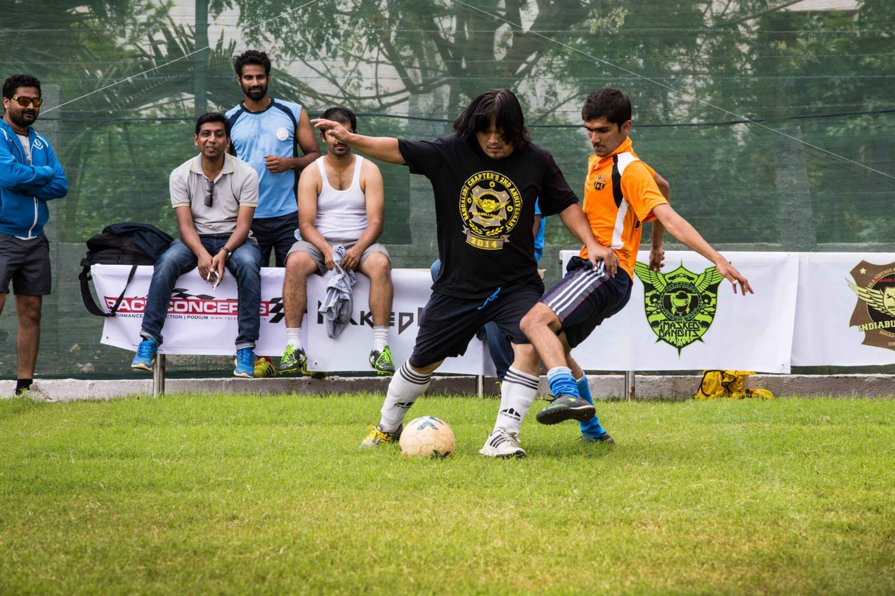

About Us
We will help you enhance your skills to the level of Messi
Founders
In an unequivocal voice, the first person who visioned about having a local level club was Jairaj Shenoy supported by Nadeem and Haokip
Wanna Be Part Of Us ?